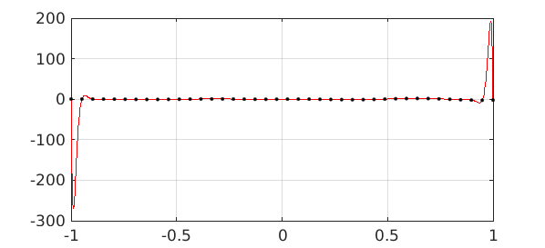
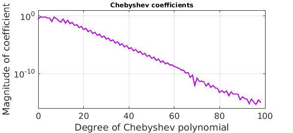
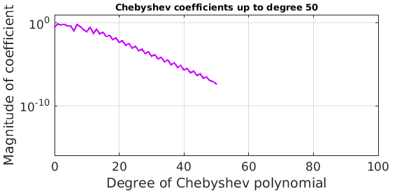
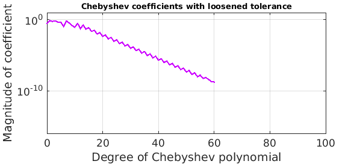
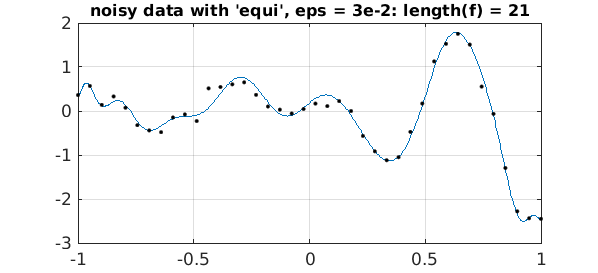

1. Introduction
For good reasons of approximation theory, Chebfun relies on polynomial interpolation in Chebyshev points, which are unequally spaced, to represent nonperiodic functions. However, many people want to work with equispaced data, and we are often asked, how can we do this in Chebfun?
Chebfun can do a pretty good job with this thanks to the 'equi' flag introduced by Georges Klein in 2011.
2. Example without noise
Suppose we want to work with the function $e^x\cos(10x)\tanh(4x)$, but all we know of it is samples at 40 equispaced points in $[-1,1]$. We can construct a Chebfun from this data as follows. Note the 'equi' flag.
ff = @(x) exp(x).*cos(10*x).*tanh(4*x); grid = linspace(-1,1,40)'; data = ff(grid); f = chebfun(data,'equi');
The plot looks good!
LW = 'linewidth'; FS = 'fontsize'; MS = 'markersize'; purple = [.8 0 1];
plot(f,LW,1), hold on, plot(grid,data,'.k',MS,8), hold off
title('chebfun constructed from 40 equispaced data values',FS,10)
The error is encouragingly small. It would be bigger with fewer data points, smaller with more.
fexact = chebfun(ff); error = norm(f-fexact,inf)
error =
3.537098266021654e-06
For comparison, this is what we get with polynomial interpolation of the same data. Of course, any Chebfun user knows that polynomial interpolation in equispaced points is a bad idea (the Runge phenomenon).
runge = chebfun.interp1(grid,data); plot(runge,'r',LW,1) hold on, plot(grid,data,'.k',MS,8), hold off

So what is this very nice chebfun obtained with the 'equi' flag, and how has Chebfun computed it?
The answer is that it is a polynomial approximant, but not simply the polynomial interpolant. In fact it has a higher degree than 40:
f
f =
chebfun column (1 smooth piece)
interval length endpoint values
[ -1, 1] 99 0.31 -2.3
vscale = 2.575084e+00.
To construct this function, Chebfun has first constructed a rational function $g$ known as a Floater-Hormann interpolant [1] that has good properties with equispaced data, and it has picked the order of this approximation in an adaptive fashion. Then, since Chebfun works with polynomials rather than rational functions, it has approximated $g$ by a chebfun $f$ of the usual polynomial kind.
Here is a plot of the Chebyshev coefficients of $f$:
plotcoeffs(f,'color',purple), axis([0 100 1e-16 10])
title('Chebyshev coefficients',FS,10)

Note that about half of them are below the level of the accuracy of the approximation, so they can't be contributing much. We could throw them away like this:
f50 = chebfun(f,51);
error50 = norm(f50-fexact,inf)
plotcoeffs(f50,'color',purple), axis([0 100 1e-16 10])
title('Chebyshev coefficients up to degree 50',FS,10)
error50 =
3.526801940675228e-06

Another approach would be construct the original chebfun with a loosened value of eps:
floose = chebfun(data,'equi','eps',1e-6);
errorloose = norm(floose-fexact,inf)
plotcoeffs(floose,'color',purple), axis([0 100 1e-16 10])
title('Chebyshev coefficients with loosened tolerance',FS,10)
errorloose =
3.536842150029010e-06

3. Example with noise
What about a function with noise? Let's add random perturbations of size $10^{-1}$ to the data:
rng('default'); rng(0)
data = data + 1e-1*randn(size(data));
Here is what we get if we construct a equispaced chebfun with eps = 1e-2:
ep = 1e-2;
f = chebfun(data,'equi','eps',ep);
plot(f,LW,1), hold on, plot(grid,data,'.k',MS,8), hold off
s = sprintf('noisy data with ''equi'', eps = 1e-2: length(f) = %d',length(f));
title(s,FS,12)
And here is the same experiment but with eps three times as large.:
ep = 3e-2;
f = chebfun(data,'equi','eps',ep);
plot(f,LW,1), hold on, plot(grid,data,'.k',MS,8), hold off
s = sprintf('noisy data with ''equi'', eps = 3e-2: length(f) = %d',length(f));
title(s,FS,12)

4. Discussion
What's nice about these 'equi' approximations is that, as usual with chebfuns, they are globally smooth functions, and can be differentiated, for example, without any anomalies arising. In some applications this is very appealing.
Another globally smooth way to deal with equispaced data, besides the Floater-Hormann approach, is to use so-called Gregory interpolants [2]. This idea, however, has not been implemented in Chebfun.
References
-
M. S. Floater and K. Hormann, Barycentric rational interpolation with no poles and high rates of approximation, Numerische Mathematik 107 (2007), 315--331.
-
M. Javed and L. N. Trefethen, Euler-Maclaurin and Gregory interpolants, Numerische Mathematik (2015).